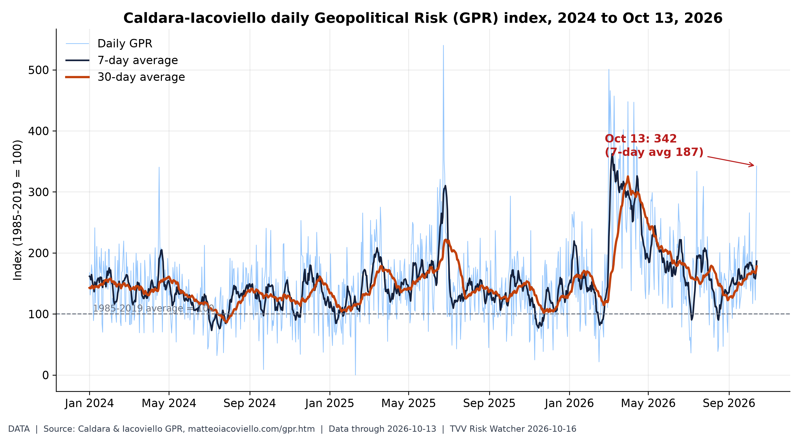
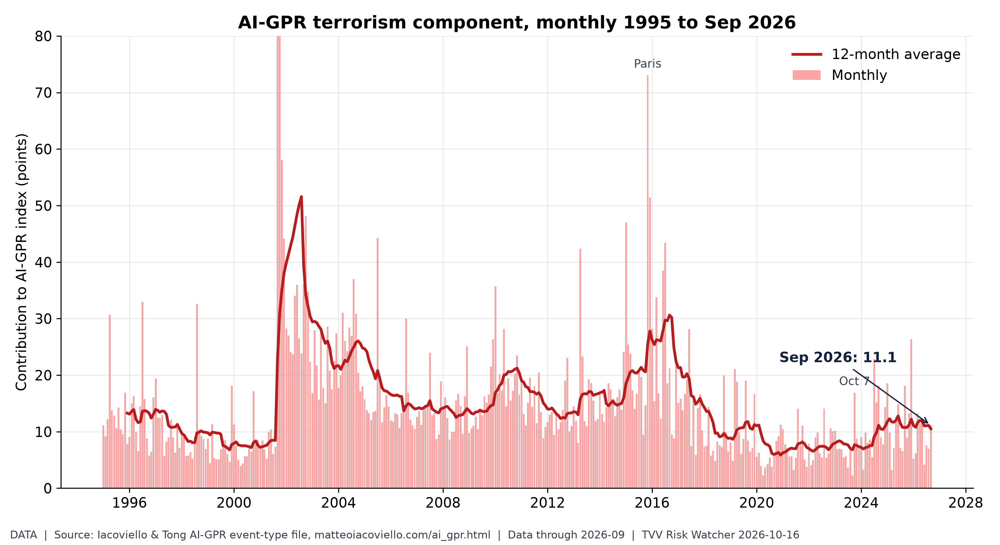
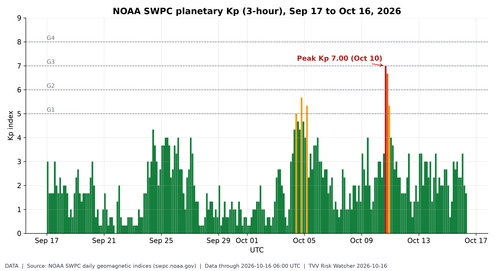
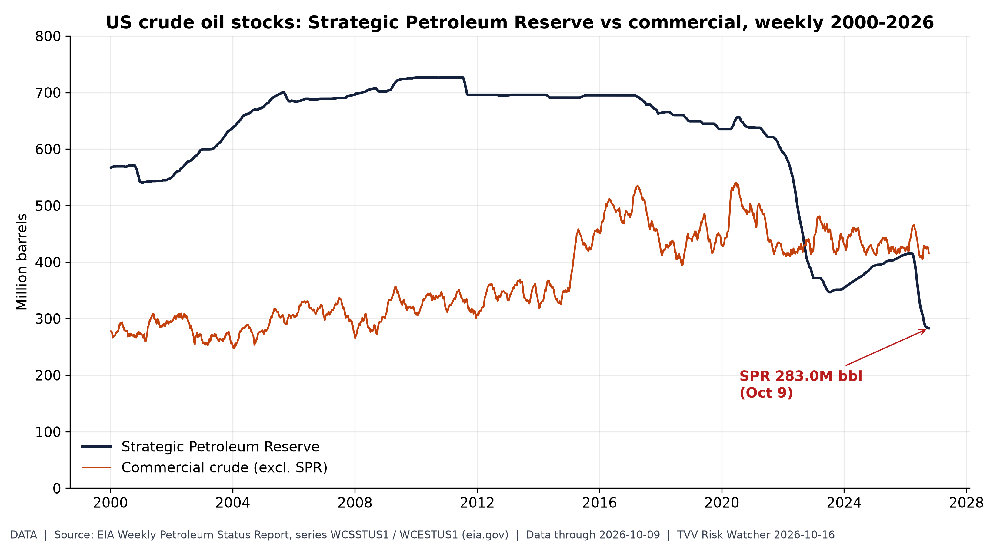
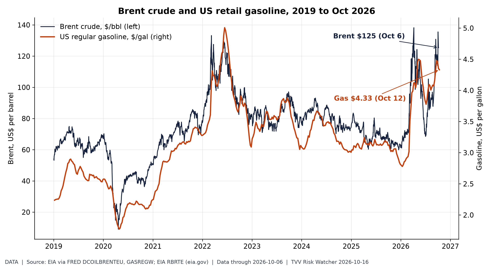
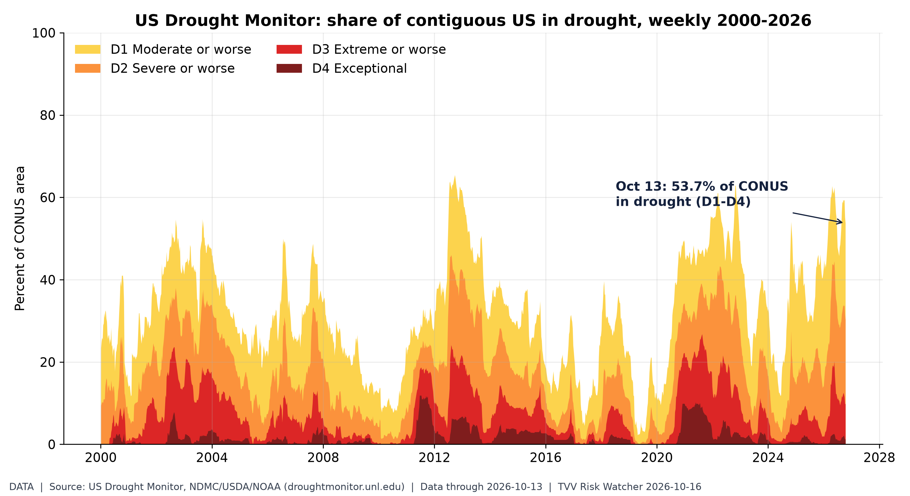
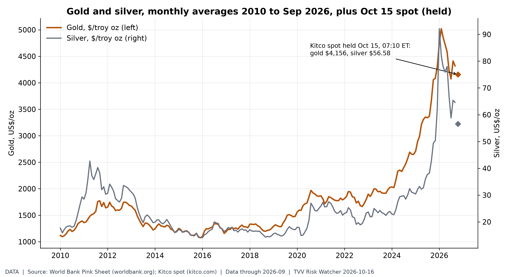
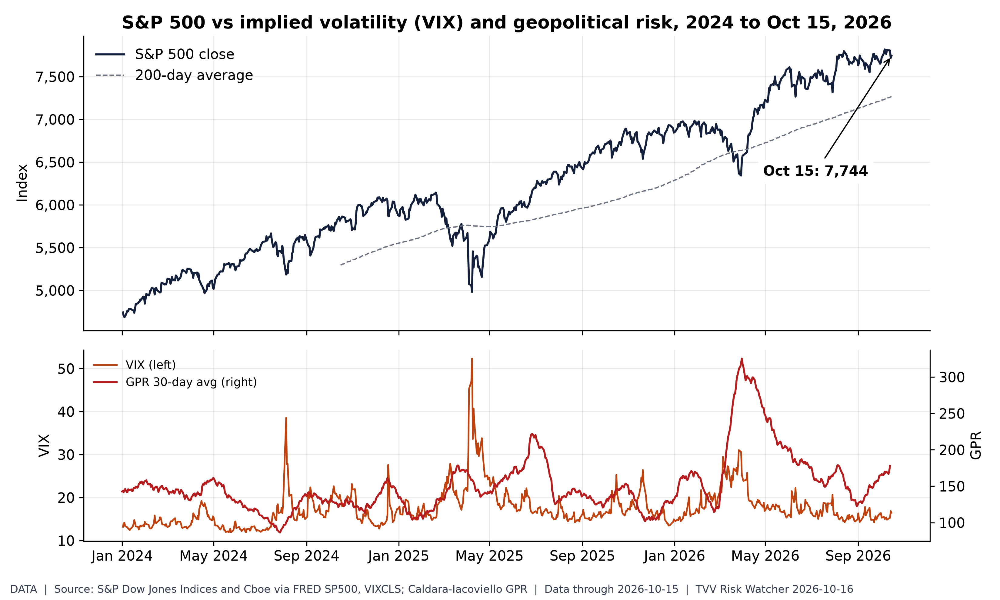
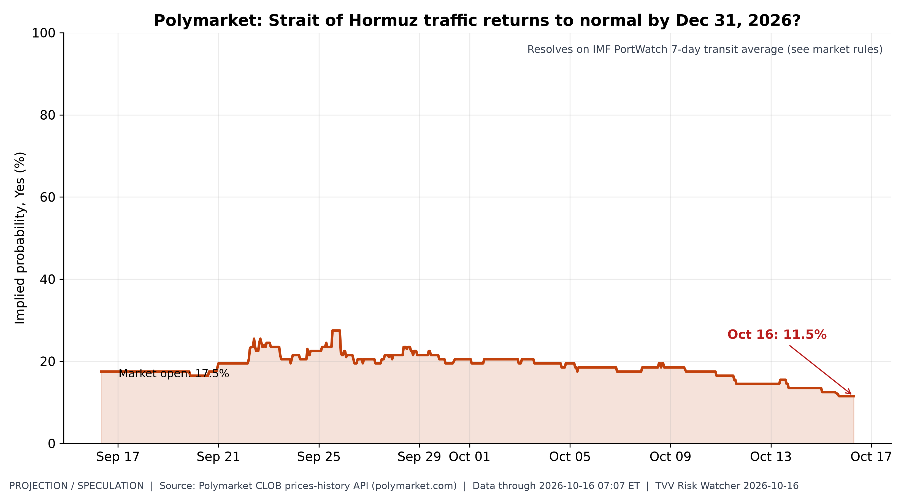
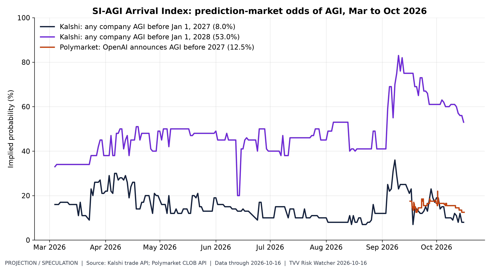

TVV RESEARCH SLATE — October 16, 2026 — 11 desks
1. Major Geopolitical Conflict Developments
- ★ JMIC Update 105, ICOD 151300 UTC Oct 15, kept Hormuz SEVERE and warned outbound and inbound vessels in the southern Omani corridor of projectile risk and AIS-on ships of elevated targeting under the NCAGS-facilitated path, citing GFS Pride wreck debris near 26-16.8N 056-08.6E. JMIC Update 105 PDF · Regulas JMIC 105 recap
- ★ CENTCOM said Oct 15 that the US and partners control Hormuz with more than 40 commercial ships in the prior 24 hours, rejected an IRGC mine claim on GFS Pride, and said an IRGC projectile hit the ship before it sank under tow. gCaptain CENTCOM Hormuz · APA CENTCOM Pride
- ★ Ukraine's Air Force said Russia launched 149 drones from the evening of Oct 15, including 108 jet-powered, with air defences destroying or jamming 114 by 09:30 Oct 16 as 27 struck 24 locations. Ukrainska Pravda Air Force · RBC-Ukraine overnight drones
- ★ JMIC Update 105 printed 121 US-facilitated Hormuz transits for Oct 11-14, about 30 a day via NCAGS, against a 2025 baseline near 138 a day, and kept AIS never the sole throughput measure. JMIC Update 105 PDF · gCaptain JMIC traffic
- Western Ukraine power: overnight Oct 15-16 jet-drone strikes left Lutsk without electricity and Kovel without power and water, with at least seven injured in Cherkasy and Volyn oblasts. Hromadske Lutsk outage · RBC-Ukraine west strikes
- JMIC Update 105 raised confirmed regional vessel incidents to 149, naming Petro Dolphin, Al Maqam, DP World Kaveri, Kition M, Ever Vict, GFS Pride, GFS Giselle and Al Saadiyat against UKMTO 165-26 through 173-26. JMIC Update 105 PDF · Regulas JMIC 105 recap
- AI-GPR, hold since Sep 30: Iacoviello's monthly AI geopolitical risk index averaged 179.3 for September, up from 151.6 the prior month; no October print yet. AI-GPR monthly data · AI-GPR index page

Daily Geopolitical Risk index. Daily GPR hit 342 on Oct 13, over triple its long-run norm (30-day avg 178), as Hormuz attacks and Russia's missile barrage hit the news. [Data; data as of 2026-10-13 (held: no newer point posted by 7 AM ET Oct 16)] Source: matteoiacoviello.com data page
2. Major Terror / Security Incidents
- ★ Israel Police and Shin Bet indicted an 18-year-old Umm el-Fahm man on Oct 13 for an ISIS-pledged plot to attack IDF soldiers in Jerusalem's Old City. Jerusalem Post indictment · INN plot foiled
- DOJ complaint, hold since Oct 7, said that FBI agents arrested 18-year-old Sheikhdoon Abdullahi Mohamud of Richfield, Minnesota, after he bought an inert AK-47 for an ISIS-pledged Mall of America mass shooting planned for Oct 24. DOJ Mall of America complaint · AP FBI arrest
- FBI Director Kash Patel, hold since Oct 7, said the Mall of America case was among more than 1,100 attack plots the bureau says it has prevented, citing a 38% rise in foreign-terror disruptions. DOJ Mall of America complaint

Terrorism share of geopolitical risk. The terrorism component of AI-GPR rose to 11.1 in September from 7.0 in August, near its March 2026 high of 13.3. [Data; data as of 2026-09 (held: monthly, next update early Nov)] Source: matteoiacoviello.com data page
3. Earthquakes and Eruptions
- ★ USGS recorded a magnitude 6.9 quake 76 km NE of Ozernovskiy, Russia, at 0335 UTC Oct 16, green PAGER, the largest shock in the past day. USGS Ozernovskiy M6.9
- USGS logged a magnitude 6.0 quake 126 km south of Kokopo, Papua New Guinea, at 1845 UTC Oct 13, green PAGER. USGS PNG M6.0
- The Panama sequence remained active: USGS listed an M6.1 west of Río Grande at 2320 UTC Oct 12, after the M7.7 orange-alert mainshock near Pitaloza Arriba, hold since Oct 9. USGS Panama M6.1 · USGS Panama M7.7
M6+ earthquake pace. 2026 has 111 M6+ quakes through Oct 16, including a M6.9 near Ozernovskiy, Russia early Oct 16, vs a 2000-25 median of 115: a normal pace; the risk is where they strike. [Data; data as of 2026-10-16 (USGS feed checked ~7 AM ET Oct 16; last M6+ Ozernovskiy M6.9)] Source: earthquake.usgs.gov data page
4. Solar / Space Weather
- ★ NOAA SWPC's 0030 UTC Oct 16 forecast expects peak Kp 2.67 through Oct 18, below storm levels, after a quiet 24 hours peaking at Kp 3. SWPC 3-day forecast · SWPC planetary K-index
- SWPC put the chance of an S1 or greater solar radiation storm at 10% on Oct 16-18, with R1-R2 radio-blackout odds at 25%, citing Region 4551 flare potential. SWPC 3-day forecast

Geomagnetic activity, last 30 days. Kp peaked at 7.00 on Oct 10, a strong storm; since then quiet, with Oct 16 so far at max Kp 3.33 and SWPC expecting no storms (max Kp 2.67) through Oct 18. [Data; data as of 2026-10-16 06:00 UTC (partial day)] Source: swpc.noaa.gov data page
5. Critical Infrastructure / Transportation Disruptions
- ★ Isaias shut-ins, hold since Oct 14: MMA's last daily note printed 202,371 barrels a day, 9.92% of Gulf oil output, plus 237 MMcf/d of gas, saying production had recovered to nearly 90% and would likely be the final daily update; no later MMA print found by ~6 AM ET Oct 16. BSEE/MMA Isaias update 8

US emergency oil buffer. The SPR held 283M barrels on Oct 9, its lowest since 1982 and under 40% of its 2010 peak, while Hormuz and Gulf supply are disrupted. [Data; data as of 2026-10-09 (held: next EIA weekly report not yet posted at 7 AM ET Oct 16)] Source: eia.gov data page
6. Econo-Metrics
- ★ Gasoline: AAA's national regular average eased to $4.3271 on Oct 16 from $4.3344 a day earlier, still about $1.27 above the year-ago $3.0570. AAA national average
- ★ Electricity: EIA's STEO, hold since Oct 6, projects residential power at 18.2 cents/kWh in 2026 and 18.7 cents in 2027, after 3Q26 consumption rose 4%. EIA STEO electricity
- ★ CME FedWatch at 10:01 UTC Oct 16 priced an 84% chance of an Oct 28 hold and 16% for a 25bp hike, with cut odds near zero after the hotter September CPI. FedWatch mirror Oct 16 · CME FedWatch tool
- Indexes Oct 15: the Dow rose 1.08% to 52,177.69, the S&P 500 gained 0.33% to 7,744.06 and the Nasdaq edged up 0.08% to 26,713.03. Investing.com US close · Quant500 Oct 15 session
- AAA's national diesel average rose to $6.3261 a gallon on Oct 16 from $6.3173 a day earlier, versus $3.6491 a year ago. AAA national average
- BLS's CPI release on Oct 14 showed prices up 0.6% for the month and 3.7% on the year, with gasoline up 9.1% and core prices up 2.6% annually. CBS News CPI report

Oil shock at the pump. Brent is $125 after an April peak of $138, above 2022's high; US gasoline averages $4.33, driving September's CPI jump. [Data; data as of 2026-10-06 (Brent, EIA spot lags ~1 wk); 2026-10-12 (gasoline, weekly)] Source: fred.stlouisfed.org data page
7. Epidemic / Bio-Metrics
- ★ Critical Water Shortage: Maharashtra's Oct 16 statewide cut of at least 10% took effect as Pune's municipal Thursday shutoffs continued after a deficient monsoon and El Niño concerns. Hindustan Times Maharashtra cut · The Hindu Pune Thursday shutoff
- Critical Water Shortage: Pune municipal water supply remained suspended every Thursday from Oct 15, with a collector-level plan for up to a 20% cut across Khadakwasla dam supply reported Oct 15-16. The Hindu Pune Thursday shutoff · Indian Express Pune 20% cut
- ECDC said as of Oct 13 the DRC Bundibugyo Ebola outbreak had 9,144 confirmed cases and 4,410 deaths (data through Oct 12), with 79 new confirmed cases and 11 deaths on Oct 12. ECDC Ebola DRC update
- ECDC noted Uganda has declared its Ebola outbreak over after 42 days without a new confirmed case, while Kenya reported an imported fatal case linked to DRC travel. ECDC Ebola DRC update
- Georgia's health department confirmed an unvaccinated Macon County measles case on Oct 13, raising its 2026 total to 22, linked to Pennsylvania's 1,100-plus outbreak. Georgia DPH release
- CDC measles count, hold since Oct 8: 4,080 confirmed US cases reported in 2026, 4,062 of them across 47 jurisdictions. CDC measles cases
- Bangladesh dengue, hold since Oct 13: the DGHS dashboard last printed about 103,000 hospitalizations and 316 deaths for 2026, with intensifying prevention appeals. Daily Star dengue appeal · DGHS dengue dashboard

Critical Water Shortage, US view. 54% of the contiguous US is in drought, worse than 93% of weeks since 2000: a broad water-stress backdrop for crops and power. [Data; data as of 2026-10-13 (map valid Oct 13-19; next map due 8:30 AM ET Oct 20)] Source: droughtmonitor.unl.edu data page
8. Gold and Silver
- ★ Kitco at 6:06 a.m. ET Oct 16: gold $4,175.70, silver $57.58, copper $6.6996/lb; bitcoin $81,836, ether $2,445.77 and XRP $1.33. Kitco live prices
- Kitco showed gold up about 0.14% and silver up about 0.48% by 6:06 a.m. ET Oct 16, with copper stamped from the Oct 16 4:00 a.m. quote. Kitco live prices · Kitco text quotes

Haven metals: high but off peak. Gold averaged $4,319 in September, about 3x 2019 but off its $5,020 Feb 2026 peak; Kitco spot held at $4,156 from early Oct 15 (overnight refresh returned older stamps). [Data; data as of 2026-09 (World Bank monthly); 2026-10-15 07:10 ET (Kitco spot, held Oct 16)] Source: worldbank.org data page
9. Stock Averages and Nasdaq Major Movers
- ★ Gainers: Wetour Robotics (WETO) +45.7%; Better Home (BETR) +32.4%; Indaptus (INDP) +28.1%; Losers: Hennessy VII (HVII) -50.9%; FMC (FMC) -30.5%; SMTG (SMTG) -20.7%; Oct 15 StockSetups Oct 15 movers
- ★ Gainers: Beneficient (BENF) +25.2%; Netcapital (NCPL) +23.0%; EOSU (EOSU) +21.6%; Losers: OUSL (OUSL) -19.2%; PENU (PENU) -19.1%; CRCD (CRCD) -19.1%; Oct 15 StockSetups Oct 15 movers
- ★ Gainers: Trade Desk (TTD) +7.8%; Equifax (EFX) +7.3%; Reddit (RDDT) +7.2%; Losers: HPE (HPE) -7.1%; Dell (DELL) -6.8%; Arista (ANET) -5.0%; S&P Oct 15 Quant500 S&P movers
- ★ Gainers: Fair Isaac (FICO) +7.0%; International Paper (IP) +6.9%; AppLovin (APP) +6.5%; Losers: Williams (WMB) -4.9%; Coherent (COHR) -4.8%; Teradyne (TER) -4.5%; S&P Oct 15 Quant500 S&P movers
- ★ Gainers: Intuit (INTU) +6.4%; Coinbase (COIN) +6.3%; CoStar (CSGP) +6.3%; Losers: Keysight (KEYS) -4.4%; Comfort Systems (FIX) -3.9%; Corteva (CTVA) -3.9%; S&P Oct 15 Quant500 S&P movers

Calm tape, hot risk. The S&P 500 rose 0.3% to 7,744 on Oct 15 (VIX 16.5), yet both sit far calmer than the elevated GPR: a complacency gap. [Data; data as of 2026-10-15 (S&P, VIX close); GPR to 2026-10-13] Source: fred.stlouisfed.org data page
10. Polymarket and Kalshi Sentiment Highlights
- ★ Ukraine ceasefire: Polymarket priced a Russia-Ukraine ceasefire deal by Dec 31 at 14.5% on Oct 16, with 8.5% by Nov 30 and 2.9% by Oct 31. Polymarket Ukraine ceasefire
- 8:40 a.m. ET update: Polymarket Dec 31 Russia–Ukraine ceasefire fell to about 10% (from 14.5% at the 6:10 a.m. print), with Oct 31 near 1%. Polymarket Ukraine ceasefire
- ★ Hormuz: Polymarket gave 11.5% odds on Oct 16 that Strait of Hormuz traffic returns to normal by Dec 31. Polymarket Hormuz normal
- FOMC: CME FedWatch put an Oct 28 hold at 84% on Oct 16, while Kalshi's hold contract last traded at 86 cents and the 25bp hike at 13 cents — converged vs Thursday's 68%/76c split; left unstarred pending Michael. Kalshi Oct Fed decision · FedWatch mirror Oct 16
- ★ US-Iran: Polymarket priced the US-Iran ceasefire continuing through the Nov 3 midterms at 77.5% on Oct 16. Polymarket US-Iran ceasefire
- ★ Midterms House: Democrats traded at 90.5% to win the House on Polymarket on Oct 16, with Election Day Nov 3. Polymarket House 2026
- Midterms Senate: Democrats traded at 64.5% to control the Senate on Polymarket as of Oct 16, Republicans at 37.5%. Polymarket Senate 2026
- Yemen: a Saudi-Houthi ceasefire announced by Dec 31 traded at 33% on Polymarket Oct 16; the Oct 31 contract held 3.1%. Polymarket Saudi-Houthi ceasefire
- Pump prices: Kalshi priced October's AAA national average finishing above $4.30 near 35% on Oct 16, above $4.40 near 17% and above $4.50 near 5%. Kalshi AAA October market
- Hormuz peak: Kalshi's week-to-Oct 18 market showed about 97% odds of peak daily traffic above 3, 62% above 5 and 7% above 8 on Oct 16. Kalshi Hormuz peak traffic
- AGI: Kalshi priced any-company AGI before 2027 near 8% on Oct 16 (KXAGICO-COMP-26Q4 last 8 cents), versus OpenAI AGI before 2027 at 12.5% on Polymarket. Kalshi AGI by date · Polymarket OpenAI AGI
- OpenAI AGI: Polymarket priced an OpenAI AGI announcement before 2027 at 12.5% on Oct 16. Polymarket OpenAI AGI
- Fed dissent: Polymarket priced zero October FOMC dissenters at 18.5% on Oct 16, with one dissenter at 24.5% and two at 23.5%. Polymarket Oct Fed dissent

Hormuz normalisation odds. Traders cut odds of normal Hormuz traffic by Dec 31 from 18% in May to 11.5%, pricing a prolonged closure. [Projection/Speculation; data as of 2026-10-16 07:07 ET] Source: polymarket.com data page
11. Tech-Metrics
- ★ Cybercab authorized: CyberCab.News said Oct 15 Texas DMV records show 349 Cybercabs among 769 Tesla Robotaxi vehicles after a 30-unit batch; fsddb's Oct 16 live total still matches 769 (319+30 cybercab labels). CyberCab.News Texas 349 · fsddb TxDMV mirror
- Cybercab in service: fsddb's receipt tracker showed 227 unique Tesla plates and 354 logged rides by Oct 16, averaging $8.94, with only eight plates active in 30 days. fsddb plate tracker
- Cybercab production ramp: fsddb and CyberCab.News attribute the +30 Texas VINs this week to a fresh Cybercab batch; Tesla has published no factory output total as of Oct 16. CyberCab.News Texas 349 · fsddb TxDMV mirror
- ★ SI-AGI Danger / Arrival Index: AGI-before-2027 odds on Oct 16 stood near 8% on Kalshi any-company and 12.5% for OpenAI on Polymarket. Kalshi AGI by date · Polymarket OpenAI AGI

SI-AGI arrival odds. Markets price AGI before 2027 at only 8-12.5% but before 2028 near 53%: a fast-closing window for AI governance risk. [Projection/Speculation; data as of 2026-10-16] Source: kalshi.com data page
TECHVESTVENTURES ACTION-ALERT — October 16, 2026
EDITOR — Michael Hentschel
Most news events require or spawn no action or reaction, some (but not many) are or become warnings. We draw attention to substantial lifestyle risks and market risks in particular, some created by Mid-Term Vote anxieties, Middle East tensions, vast over-indebtedness globally, and other events we track. Longer term but capable of causing sudden power surges as serious as the Carrington Event. Climate instability occasioned by long-term cyclical solar electro-magnetic flares, is becoming much more prominent and even more likely. New AI predictive analytics and pattern seekers are pointed in some of these directions, and we monitor imminent likelihood. Some readers might hedge and others might see opportunity. The above is not investment advice.
Graph Sources
• Daily Geopolitical Risk index: https://www.matteoiacoviello.com/gpr.htm
• Daily Geopolitical Risk index (data): https://www.matteoiacoviello.com/gpr_files/data_gpr_daily_recent.xls
• Terrorism share of geopolitical risk: https://www.matteoiacoviello.com/ai_gpr.html
• Terrorism share of geopolitical risk (data): https://www.matteoiacoviello.com/ai_gpr_files/ai_gpr_eventtype_monthly.csv
• M6+ earthquake pace: https://earthquake.usgs.gov/fdsnws/event/1/
• M6+ earthquake pace (data): https://earthquake.usgs.gov/earthquakes/eventpage/us6000u2mq
• Geomagnetic activity, last 30 days: https://www.swpc.noaa.gov/products/planetary-k-index
• Geomagnetic activity, last 30 days (data): https://services.swpc.noaa.gov/text/daily-geomagnetic-indices.txt
• Geomagnetic activity, last 30 days (data): https://services.swpc.noaa.gov/text/3-day-forecast.txt
• US emergency oil buffer: https://www.eia.gov/dnav/pet/hist/LeafHandler.ashx?n=PET&s=WCSSTUS1&f=W
• US emergency oil buffer (data): https://www.eia.gov/dnav/pet/hist/LeafHandler.ashx?n=PET&s=WCESTUS1&f=W
• Oil shock at the pump: https://fred.stlouisfed.org/series/DCOILBRENTEU
• Oil shock at the pump (data): https://fred.stlouisfed.org/series/GASREGW
• Oil shock at the pump (data): https://www.eia.gov/dnav/pet/hist/LeafHandler.ashx?n=PET&s=RBRTE&f=D
• Critical Water Shortage, US view: https://droughtmonitor.unl.edu/DmData/DataDownload.aspx
• Critical Water Shortage, US view (data): https://usdmdataservices.unl.edu/api/USStatistics/GetDroughtSeverityStatisticsByAreaPercent
• Haven metals: high but off peak: https://www.worldbank.org/en/research/commodity-markets
• Haven metals: high but off peak (data): https://www.kitco.com/price
• Calm tape, hot risk: https://fred.stlouisfed.org/series/SP500
• Calm tape, hot risk (data): https://fred.stlouisfed.org/series/VIXCLS
• Calm tape, hot risk (data): https://www.cboe.com/tradable_products/vix/vix_historical_data/
• Hormuz normalisation odds: https://polymarket.com/event/strait-of-hormuz-traffic-returns-to-normal-by-december-31
• Hormuz normalisation odds (data): https://docs.polymarket.com/
• SI-AGI arrival odds: https://kalshi.com/markets/kxagico/will-any-company-achieve-agi-before-date/kxagico-comp
• SI-AGI arrival odds (data): https://polymarket.com/event/openai-announces-it-has-achieved-agi-before-2027